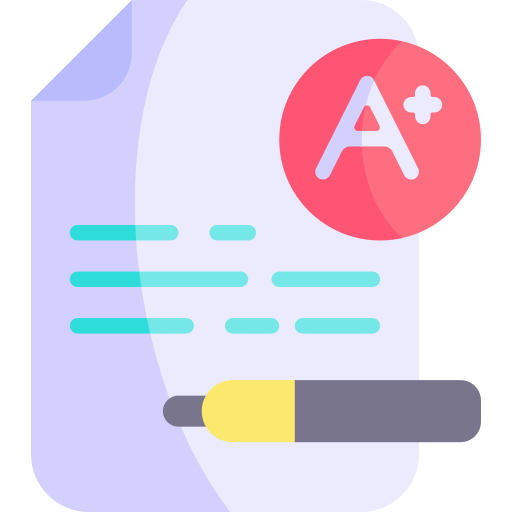

About Me

Nice to meet you! My name is Mary Elizabeth Bridges. Apart from web development I love coffee, photography, and travel! I have visited six countries so far and I would love to explore the rest of the world (and eat all of the food!).
What I'm Studying
I am a current student of Florida State College at Jacksonville. There I am pursuing an A.S. degree in Information Technology. My current study is web technologies, networking, and information systems.